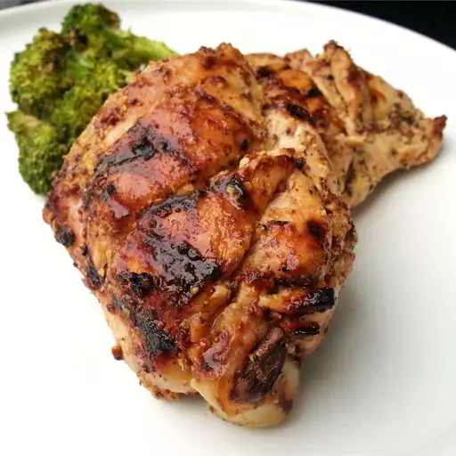

Sweet Hot Mustard Chicken
Back to Home

Ingredients
Serves 4
- 4 bone-in, skin on chicken thighs
- 1/4 cup Dijon mustard
- 1/8 cup packed brown sugar
- 1/8 cup red wine vinegar
- 1/2 teaspoon dry mustard powder
- 1/2 teaspoon salt
- 1/2 teaspoon freshly ground black pepper
- 1/4 teaspoon ground dried chipotle pepper
- 1/2 pinch cayenne pepper, or to taste
- 2 cloves garlic, minced
- 1/2 onion, sliced into rings
- 1 teaspoon vegetable oil, or as needed
Directions
-
Make 2 slashes crosswise into the skin and meat of each chicken thigh. Cuts should be about 1 inch apart.
Transfer thighs into a heavy resealable bag.
-
Whisk Dijon mustard, brown sugar, red wine vinegar, mustard powder, salt, black pepper, ground chipotle
pepper, and cayenne pepper in a bowl until smooth. Whisk garlic into marinade.
-
Pour marinade into bag over the chicken. Massage marinade into the chicken thighs.Seal and refrigerate for
atleast 4 hours.
-
Move a rack to the center of the oven. Preheat the oven to 450 degrees F (230 degrees C). Line a baking
sheet with aluminum foil and lightly oil the foil.
-
Scatter onion rings onto prepared baking sheet. Place chicken thighs on top of onion rings. Spray or brush
thighs with oil. Sprinkle additonal salt or cayenne pepper if desired.
-
Roast chicken in preheated oven until the skin is browned, meat is tender and the juices run clear, 35 to 45
minutes.
-
Transfer chicken and onions to serving platter. Pour pan drippings into a saucepan, bring to boil and
continue boiling, stirring often, until drippings are reduced by half, 3 to 4 minutes.
-
Spoon reduced pan sauce over the chicken thigh and serve.
Nutrition Facts
Per Serving
Calories: 352
Fat: 19g
Carbs: 14g
Protein: 29g